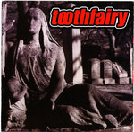

| Artist: | Toothfairy |
| Title: | Does Not Work Well With Reality |
| Label: | Noiseville #56 |
| Length(s): | 70 minutes |
| Year(s) of release: | 2006 |
| Month of review: | [07/2008] |
| 1) | Omni-Present Grip Of Reality | 1.30 |
| 2) | Great Trains That Crashed | 4.23 |
| 3) | Clarabell's Redundant Nature Pt 1 | 1.39 |
| 4) | West Mountain | 4.08 |
| 5) | Clarabell's Redundant Nature Pt 2 | 0.49 |
| 6) | An Angel Cometh | 2.55 |
| 7) | Clarabell's Redundant Nature Pt 3 | 2.01 |
| 8) | McMansion On The Hill | 4.16 |
| 9) | The Gates Have Closed | 4.38 |
| 10) | Nothing To Recognize | 4.40 |
| 11) | Clarabell's Redundant Nature Pt 4 | 1.16 |
| 12) | Funny Thing Is I'm Grey | 6.10 |
| 13) | Vauxhall Infusion | 7.34 |
| 14) | Clarabell's Redundant Nature Pt 5 | 1.03 |
| 15) | Praises Be To The Bog | 6.36 |
| 16) | The Dancing Bones | 4.23 |
| 17) | Clarabell's Redundant Nature Pt 6 | 0.28 |
| 18) | Bad Choices | 4.46 |
| 19) | Clarabel'ls Redundant Nature Pt 7 | 0.59 |
| 20) | The Last Station | 5.57 |
Even though the trippy and noisy tracks might be something of an acquired taste, they do have merit. Sort of. Apart from this, however, we get a number of songs that are mostly psychedelic singer songwriter tracks. Apart from the occasional keyboard to set the atmosphere, these are mostly acoustic guitar with significantly lackluster vocals, and some of those ever-feared drummachines thrown in for good measure. These tracks remind me a bit of the independent releases of guitarist Rick Ray, including the lo-fi aspects. RHCP's John Frusciante has done some solo material which has the same tendencies, too, excluding the lo-fi aspects. It should be said, though, that Gibson at least manages to steer his gravelly voice through the intended melodies without too much damage, which cannot be said for Ray
Then there's the odd tracks, where we hear the use of vocoders, funny lyrics and sounds and other doodling. Which once again brings up the old question: does humor belong in music? As the album's end draws the near, the band go off the edge completely, leaving me with nothing but surprise. We are left with trippy experiment.